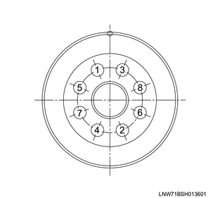
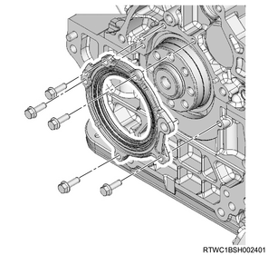
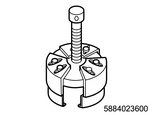
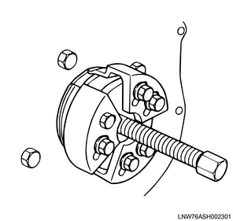

Crankshaft rear oil seal removal (4JJ1)
1. Battery ground cable disconnect
1. Open the engine hood assembly.
2. Disconnect the battery ground cable from the battery.
Caution
- Do not disconnect within 1 minute after turning OFF the ignition switch.
3. Raise vehicle using the jack.
2. Engine cover removal
1. Remove the engine cover from the engine.

- Engine cover
3. Engine hood assembly removal
1. Open the engine hood.
Note
- Support the engine hood.
- Disconnect the tube from the washer nozzle.
2. Remove the hinge bolt from the engine hood.
3. Remove the engine hood from the hinge.
Note
- Before removing the hinge from the engine hood, put a marking of the hinge location for putting the hinge back in place.

4. Wiper arm cover removal
1. Remove the wiper arm cover from the wiper arm.
5. Wiper arm removal
1. Remove the wiper arm from vehicle.
Note
- Remove the nut to remove the wiper arm and the blade.

- Wiper arm cover
- Nut
- Wiper arm, blade
6. Side cowl cover removal
1. Remove the side cowl cover from the body.

- Side cowl cover
7. Cowl cover removal
1. Disconnect the washer hose from the clip.
2. Remove the grommet from the cowl panel.
Note
- Push the grommet down inside the cowl panel.

- Grommet
- Washer hose
3. Remove the cowl cover from the cowl panel.
8. Wiper linkage disconnect
1. Disconnect the wiper linkage from vehicle.
Note
- Remove the bolt and nut from the wiper linkage.
- Remove the connector from the wiper motor.

- Nut
- Bolt
9. Cowl panel removal
1. Remove the cowl panel from vehicle.
Note
- Remove the 8 bolts.

10. Transmission oil level gauge tube removal
1. Remove transmission oil level gauge tube from the oil pan.
11. Oil level gauge guide tube removal
1. Remove the oil level gauge from the oil level gauge guide tube.
2. Remove the oil level gauge guide tube from the crankcase.
12. Starter motor removal
1. Disconnect the earth cable from the starter motor.
2. Remove the starter motor from the rear plate.
13. Transmission assembly removal
14. Clutch assembly removal
15. Flywheel removal
1. Remove the flywheel from the crankshaft.
Note
- Gradually loosen the flywheel mounting bolts in the order shown in the diagram while confirming that the flywheel does not rotate.

2. Remove special tool from the rear plate.
Note
- Remove the crankshaft stopper from the starter installation section of the rear plate.

SST: 5-8840-0214-0 - crankshaft stopper
Note
- For automatic transmission vehicles, after loosening the flywheel mounting bolts, remove the washers, flexible plate, flywheel and sleeve in that order.
16. Rear plate removal
1. Remove the rear plate from the cylinder block and the crankcase.

17. Oil seal retainer removal
1. Remove the oil seal retainer from the cylinder block and the crankcase.
Note
- Remove it together with the oil seal.

18. Crankshaft rear oil seal removal
1. Remove the crankshaft rear oil seal from the retainer.
2. Remove the slinger from the crankshaft using special tool.
Note
- Install the slinger puller as shown in the diagram and remove the slinger.
Caution
- Do not reuse the crankshaft rear oil seal.

SST: 5-8840-2360-0 - rear oil seal remover
